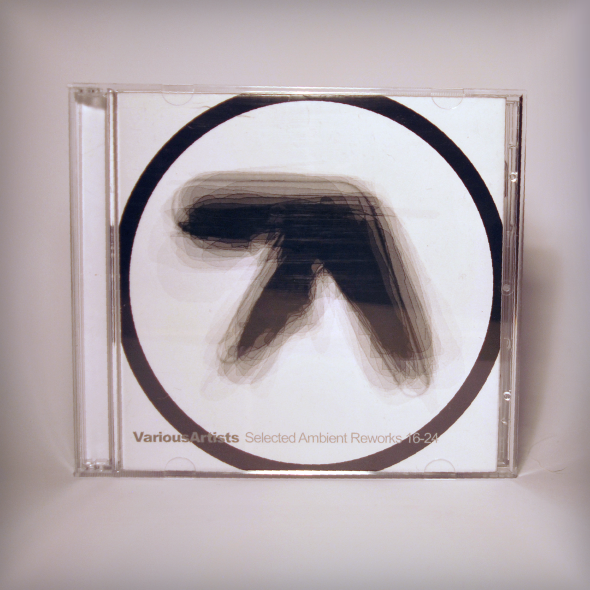
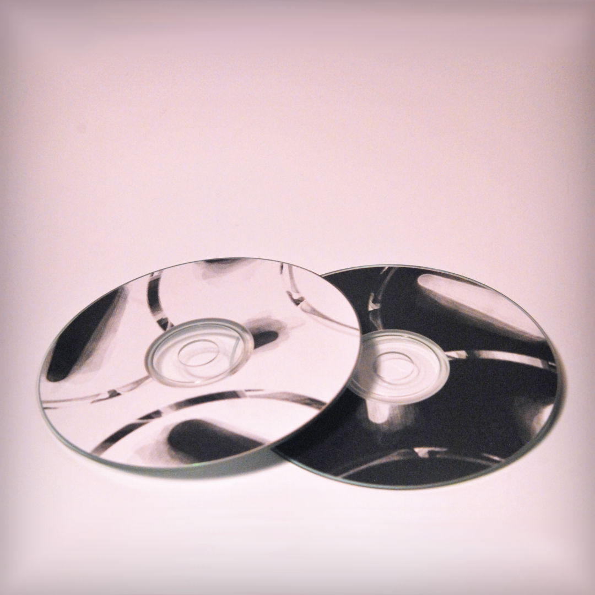
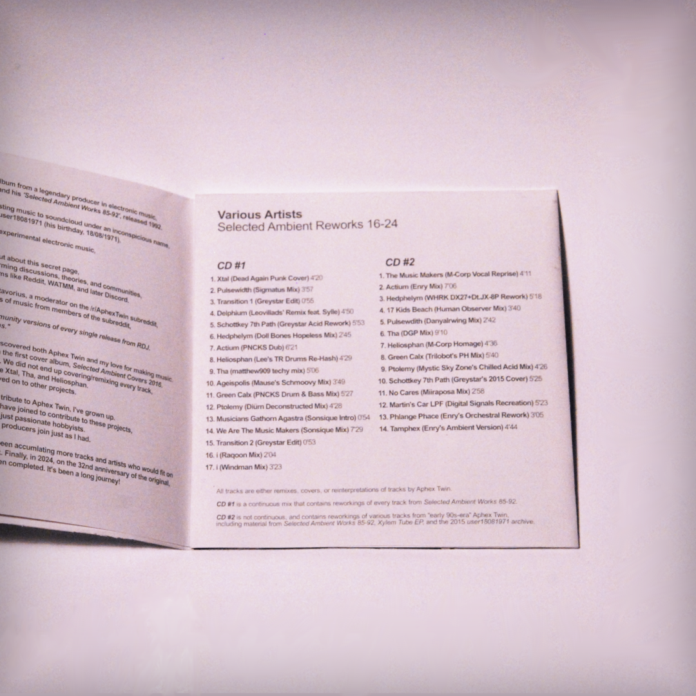
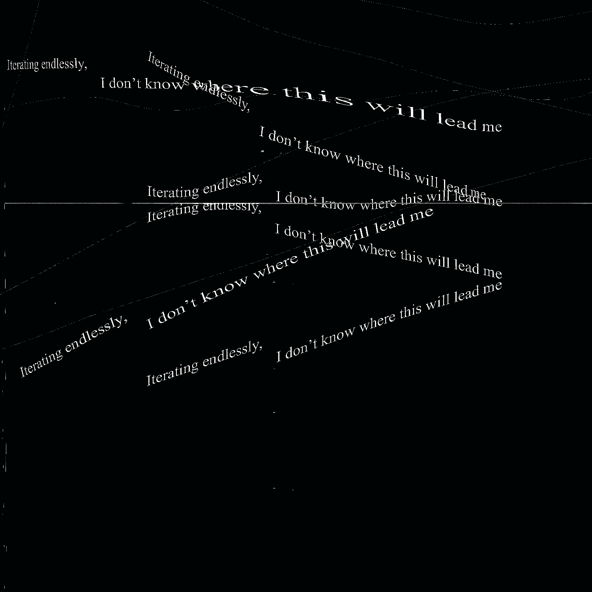
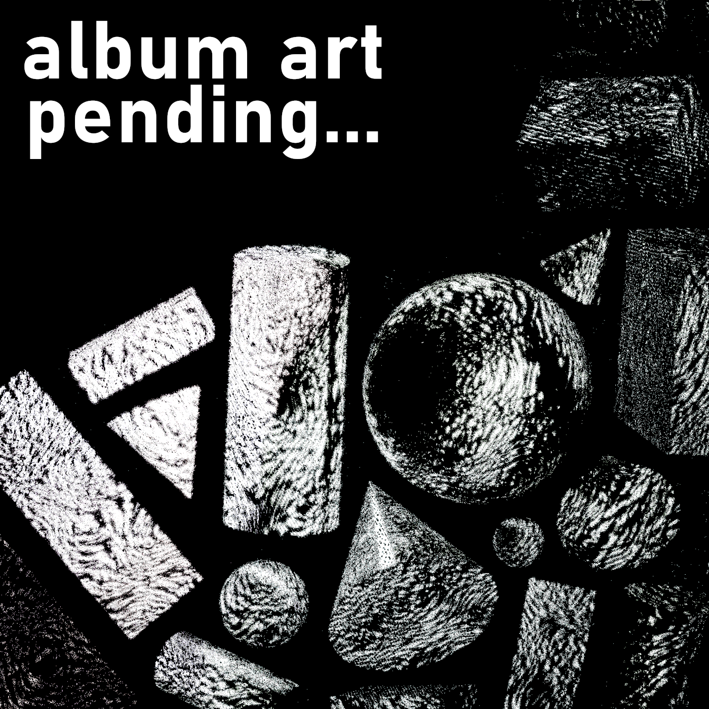

greystar blog post 1 1.10.25
the medium is the message
I've been pretty active on instagram lately. It has grown into my main platform for reaching my audience.
I don't mind it, but I find that in order to be successful using the platform, I have to cater to its way of doing things... not even to reach new people, just to reach the people who already follow me. It elicites a marketing mentality out of necessity. It is an image-based platform after all.
I want to have a space where I can rant ideas! So I'll do it here.
I've been wanting to start a blog on this website for a while. The main thing that has been holding me back is the perceptual workload of making it look "good". I've finally decided to not care, it's better to get started than linger on this idea forever. I plan to brush up on my HTML knowledge and make this look nice eventually. Doomed to the curse of amateur websites, "sorry! site is work in progress, but I plan to put a bunch of stuff here later!"
  
so I made some CDs!!!
I've had this ongoing cover/tribute album project to Aphex Twin and Autechre since I was 14,
and the most recent Selected Ambient Reworks 16-24 compilation has been the most ambitious one yet.
Making these CDs was a lot of work... I did all the graphic design, there's a booklet included with a bunch of interviews from ppl involved, that was cool to put together. It has been a valuable experience, learning how together a nice looking release! And also figuring out how to finally take decent pictures of the merch itself.

Stability EP -- release date: ??? "soon"
Album art will be in this style but this is not the final artwork!
I've always got so many projects I'm working on simultaneously, but I'd like to finish this one soon.
I've played a lot of these tracks out at recent live shows, including my midwest tour.
It's a much different sound from playgrounds and playgrounds: recess. It's more in vein of my studio sessions album from around this time last year, and includes several remixes/expanded versions of tracks from that project.
I do worry about changing my "style" or "sound" sometimes. I've been involved in the IDM circles for a long time now,
and I think many people associate my music with the "IDM" sound. My recent playgrounds releases definitely play into this, and I'm happy with them! But I'd also like to move on to explore different sounds and influences.
I hope you like it!
tracklist [may change later]...
1. Into This World
2. Stability Acid
3. ph8 Acid
4. You Would Not Recognize Me (Microtonal Dub)
5. Focus (Remix)
6. Heavy Laika
7. This Shit Will Fall Apart

Playgrounds: Closure -- release date: in a few months? idk
I'm currently planning on commissioning my friend Hal for some awesome album artwork for this!
Originally, I was planning on just having "Playgrounds: Recess" be THE remix album to Playgrounds.
The original title was just going to simply be "Playgrounds: Remixes", but I wanted to have a title that was more themed.
This project evolved into a larger project, and I still didn't end up including all the tracks I was hoping to.
I had so many bonus tracks and unincluded ideas, that I decided it was worth it to make a third and final album
that would bring 'closure' to this series of IDM releases.
My goal with Playgrounds: Closure is to have it be the most rave-oriented, loud, & fun release out of all three.
I've been playing live so much more often now that I want to have some tracks I can play out that fit the setting of a rave.
Many of the tracks off this project have been played live beforehand, or are based specifically off of the live versions.
It's a fun technique - to play out "demo" versions of songs. Feels like easter eggs to go back and discover them again.
The final version that ends up on the album is often very different.
It's also worth mentioning HOPSCOTCH, an elusive album I've hinted at releasing for 4+ years now.
There are several tracks being released on the Playgrounds Trilogy that were originally planned for hopscotch.
My hope is to bring closure to this kind of sound so that I can move further into the sound I envision for hopscotch.
The sound of hopscotch will be much more similar to the Stability EP I have planned.
alright, here's a rough tracklist for Playgrounds: Closure...
1. Tremalon (Closure Mix)
2. The Speaker At Night
3. New Friends (Gabber Mix)
4. Wormhole (Perc Mix)
5. Kyle's Marimba (Missing Mix)
6. Amen's Marimba
7. Grey's Marimba
8. Eat Your Breakfast
9. Kyrie
10. Aussie (Predawka Remix)
11. Webkinz Jump Rope (DJ Airwalk's Curio Shop Remix)
12. The New Amen
13. Linker 2 (Miya Lowe Remix)
14. Linker 3
15. The Gauntlet
16. Into The Vortex (Modular Mix)
17. School Bell (School's Out Mix)
18. Tribute To Qebrus
ok! I think that's all from me for now. I definitely would like to do more of these blog posts.
I know this was a pretty long one. I've been wanting to share news & ideas about upcoming projects for a while!
If you read this and feel like responding, feel free to say something in the "guest book" on the homepage.
At some point I'll try setting up a comments box here.
Ok! Have a good day!